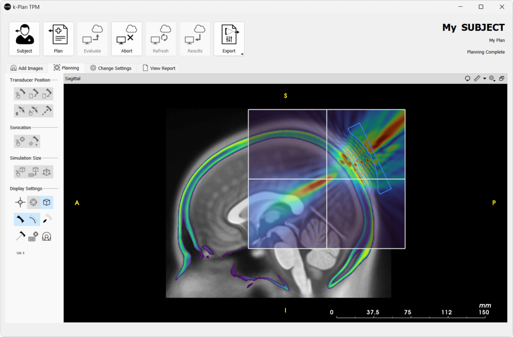
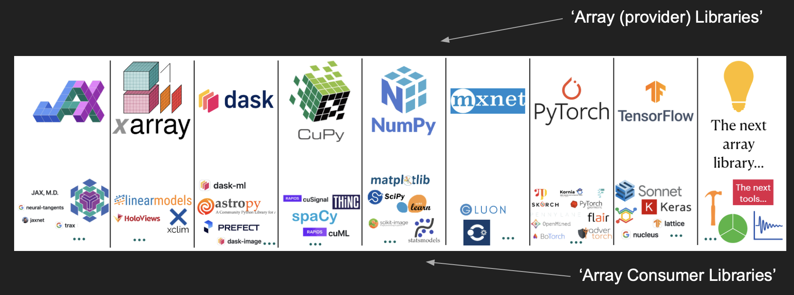
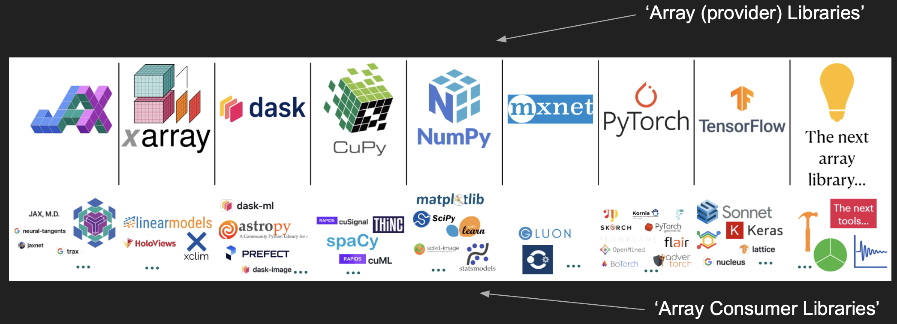
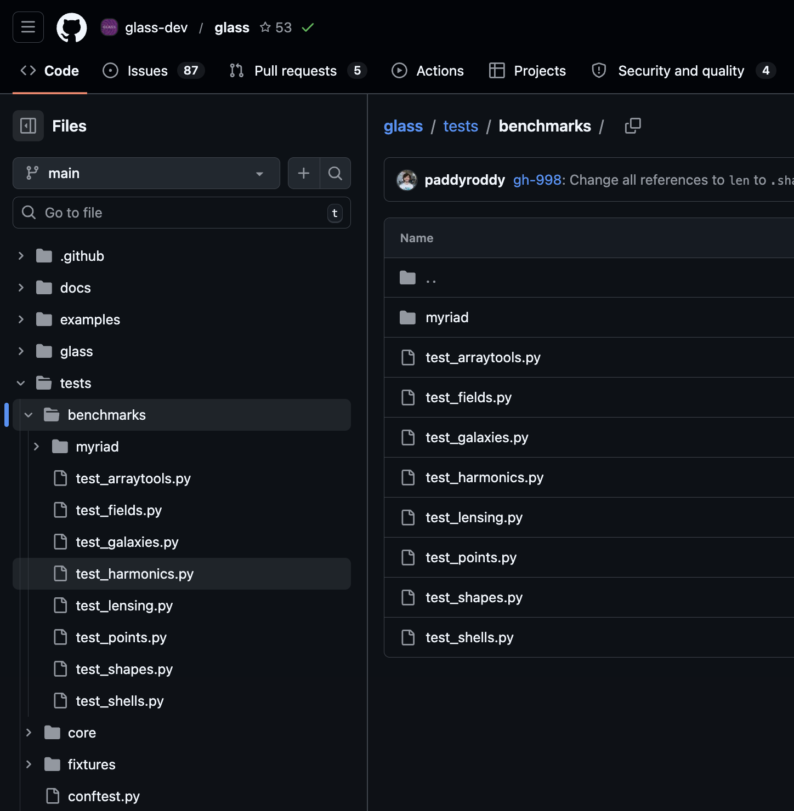

Pytest Benchmark, was it worth it?
ARC Forum
Connor Aird
University College London
2026-04-21
Re-Intro
Me in Maps
- Hartlepool, 1997 - 2016
- York, 2016 - 2023
- London, 2023 - now
Quick Summary: Work
- Physics
- Fortran
- Python
- C++
- TechSocials
- Teaching
- HPC


Quick Summary: Hobbies
- Exercise (running, gym, etc)
- Board games
- Visiting breweries and distilleries
- Hiking
- Wild swimming
- Underwater Hockey (Octopush)
Got married in April 2025
Pytest Benchmark
GLASS
Generator for Large Scale Structure
- Python code which generates full-universe simulations for large galaxy surveys.
- Heavily depends on NumPy.

Project aim
Port GLASS to the array-api such that NumPy could be replaced by the user with any other array-api compatible library including one that is GPU enabled.
The Python Array-API (i)
Before - Libraries limit the tools available

Credit: Aaron Meurer, ‘Python Array API Standard’, SciPy 2023 via Lucas Colley, A Hitchhiker’s Guide to the Array API Standard Ecosystem, EuroSciPy 2025
The Python Array-API (ii)
After - All libraries work with all tools

Credit: Aaron Meurer, ‘Python Array API Standard’, SciPy 2023 via Lucas Colley, A Hitchhiker’s Guide to the Array API Standard Ecosystem, EuroSciPy 2025
Why did we need benchmarks?
Porting to the array-api adds performance penalties.
- Extra if conditions
- Extra function calls
- Transforming large arrays between backends
What is pytest benchmark?
Pytest
The pytest framework makes it easy to write small, readable tests, and can scale to support complex functional testing for applications and libraries.
import pytest
# src code
def inc(x):
return x + 1
# Basic example
def test_inc():
assert inc(3) == 4
# Example with fixtures
@pytest.fixture(scope="session")
def inputs():
return [1,2,3,4,5,6,7,8,9,10]
@pytest.fixture(scope="session")
def outputs():
return [2,3,4,5,6,7,8,9,10,11]
def test_inc_with_fixtures(inputs, outputs):
for i in range(len(inputs)):
assert inc(inputs[i]) == outputs[i]
Pytest: Output
$ pytest _code/pytest_example/test_standard.py ============================= test session starts ============================== platform linux -- Python 3.12.3, pytest-9.0.3, pluggy-1.6.0 benchmark: 5.2.3 (defaults: timer=time.perf_counter disable_gc=False min_rounds=5 min_time=0.000005 max_time=1.0 calibration_precision=10 warmup=False warmup_iterations=100000) rootdir: /home/runner/work/connoraird.github.io/connoraird.github.io/talks/2026-04-21-pytest-benchmark-was-it-worth-it plugins: benchmark-5.2.3, anyio-4.13.0 collected 2 items _code/pytest_example/test_standard.py .. [100%] ============================== 2 passed in 0.01s ===============================
pytest-benchmark
The pytest-benchmark plugin provides a benchmark fixture which benchmarks any function passed to it.
benchmark(function_to_benchmark, args, kwargs)
pytest-benchmark: Output
An output table contains performance metrics for each test
$ pytest _code/pytest_example/test_with_benchmark.py --benchmark-autosave ============================= test session starts ============================== platform linux -- Python 3.12.3, pytest-9.0.3, pluggy-1.6.0 benchmark: 5.2.3 (defaults: timer=time.perf_counter disable_gc=False min_rounds=5 min_time=0.000005 max_time=1.0 calibration_precision=10 warmup=False warmup_iterations=100000) rootdir: /home/runner/work/connoraird.github.io/connoraird.github.io/talks/2026-04-21-pytest-benchmark-was-it-worth-it plugins: benchmark-5.2.3, anyio-4.13.0 collected 1 item _code/pytest_example/test_with_benchmark.py . [100%] ----------------------------------------------------- benchmark: 1 tests ----------------------------------------------------- Name (time in ns) Min Max Mean StdDev Median IQR Outliers OPS (Mops/s) Rounds Iterations ------------------------------------------------------------------------------------------------------------------------------ test_inc 839.0000 16,130.0000 910.0890 240.6790 898.0000 36.0000 242;1637 1.0988 79937 1 ------------------------------------------------------------------------------------------------------------------------------ Legend: Outliers: 1 Standard Deviation from Mean; 1.5 IQR (InterQuartile Range) from 1st Quartile and 3rd Quartile. OPS: Operations Per Second, computed as 1 / Mean ============================== 1 passed in 2.38s ===============================
What’s actually happening?
- Attempts to reduce noise by running your function many times and averaging together.
- A pedantic mode exists which allows full control of how the data is gathered.
- Seems better to use the default settings and make tweaks with the CLI options.
Json output
{
"machine_info": {
"node": "Connors-MacBook-Pro-2.local",
"processor": "arm",
"machine": "arm64",
"python_compiler": "Clang 20.1.4 ",
"python_implementation": "CPython",
"python_implementation_version": "3.14.0",
"python_version": "3.14.0",
"python_build": ["main", "Oct 28 2025 12:03:45"],
"release": "25.2.0",
"system": "Darwin",
"cpu": {
"python_version": "3.14.0.final.0 (64 bit)",
"cpuinfo_version": [9, 0, 0],
"cpuinfo_version_string": "9.0.0",
"arch": "ARM_8",
"bits": 64,
"count": 8,
"arch_string_raw": "arm64",
"brand_raw": "Apple M2"
}
},
"commit_info": {
"id": "d639a15876d1caeaaf9662000c27e779bce8b53e",
"time": "2026-03-16T14:35:42Z",
"author_time": "2026-03-16T14:35:42Z",
"dirty": true,
"project": "hub.io",
"branch": "9-pytest-benchmark-talk"
},
"benchmarks": [
{
"group": null,
"name": "test_inc",
"fullname": "_code/pytest_example/test_with_benchmark.py::test_inc",
"params": null,
"param": null,
"extra_info": {},
"options": {
"disable_gc": false,
"timer": "perf_counter",
"min_rounds": 5,
"max_time": 1.0,
"min_time": 5e-6,
"warmup": false
},
"stats": {
"min": 3.7497375160455704e-7,
"max": 6.584014045074582e-6,
"mean": 4.496543409141616e-7,
"stddev": 6.043433154298173e-8,
"rounds": 40473,
"median": 4.580069798976183e-7,
"iqr": 4.1996827349066734e-8,
"q1": 4.169996827840805e-7,
"q3": 4.5899651013314724e-7,
"iqr_outliers": 382,
"stddev_outliers": 426,
"outliers": "426;382",
"ld15iqr": 3.7497375160455704e-7,
"hd15iqr": 5.409820005297661e-7,
"ops": 2223930.4928469458,
"total": 0.018198860139818862,
"iterations": 1
}
}
],
"datetime": "2026-04-09T09:40:34.938982+00:00",
"version": "5.2.3"
}
Comparing benchmarks
We can also define regression tests
$ SLOW=true pytest _code/pytest_example/test_with_benchmark.py --benchmark-compare=0001 --benchmark-compare-fail=mean:5% ============================= test session starts ============================== platform linux -- Python 3.12.3, pytest-9.0.3, pluggy-1.6.0 benchmark: 5.2.3 (defaults: timer=time.perf_counter disable_gc=False min_rounds=5 min_time=0.000005 max_time=1.0 calibration_precision=10 warmup=False warmup_iterations=100000) rootdir: /home/runner/work/connoraird.github.io/connoraird.github.io/talks/2026-04-21-pytest-benchmark-was-it-worth-it plugins: benchmark-5.2.3, anyio-4.13.0 collected 1 item _code/pytest_example/test_with_benchmark.py . [100%] ------------------------------------------------------------------------------------------------------------------ benchmark: 2 tests ------------------------------------------------------------------------------------------------------------------ Name (time in ns) Min Max Mean StdDev Median IQR Outliers OPS Rounds Iterations -------------------------------------------------------------------------------------------------------------------------------------------------------------------------------------------------------------------------------------------------------- test_inc (0001_1344f4c) 839.0000 (1.0) 16,130.0000 (1.0) 910.0890 (1.0) 240.6790 (1.0) 898.0000 (1.0) 36.0000 (1.0) 242;1637 1,098,793.6101 (1.0) 79937 1 test_inc (NOW) 1,000,102,411.0000 (>1000.0) 1,000,123,950.0000 (>1000.0) 1,000,115,396.6000 (>1000.0) 10,186.1775 (42.32) 1,000,120,946.0000 (>1000.0) 18,016.2500 (500.45) 1;0 0.9999 (0.00) 5 1 -------------------------------------------------------------------------------------------------------------------------------------------------------------------------------------------------------------------------------------------------------- Legend: Outliers: 1 Standard Deviation from Mean; 1.5 IQR (InterQuartile Range) from 1st Quartile and 3rd Quartile. OPS: Operations Per Second, computed as 1 / Mean /home/runner/work/connoraird.github.io/connoraird.github.io/.venv/lib/python3.12/site-packages/pytest_benchmark/logger.py:44: PytestBenchmarkWarning: Benchmark machine_info is different. Current: {"cpu": {"arch": "X86_64", "arch_string_raw": "x86_64", "bits": 64, "brand_raw": "Intel(R) Xeon(R) Platinum 8370C CPU @ 2.80GHz", "count": 4, "cpuinfo_version": [9, 0, 0], "cpuinfo_version_string": "9.0.0", "family": 6, "flags": ["3dnowprefetch", "abm", "adx", "aes", "aperfmperf", "apic", "arch_capabilities", "avx", "avx2", "avx512_bitalg", "avx512_vbmi2", "avx512_vnni", "avx512_vpopcntdq", "avx512bitalg", "avx512bw", "avx512cd", "avx512dq", "avx512f", "avx512ifma", "avx512vbmi", "avx512vbmi2", "avx512vl", "avx512vnni", "avx512vpopcntdq", "bmi1", "bmi2", "clflush", "clflushopt", "clwb", "cmov", "constant_tsc", "cpuid", "cx16", "cx8", "de", "ept", "ept_ad", "erms", "f16c", "fma", "fpu", "fsgsbase", "fsrm", "fxsr", "gfni", "hle", "ht", "hypervisor", "invpcid", "la57", "lahf_lm", "lm", "mca", "mce", "mmx", "movbe", "msr", "mtrr", "nonstop_tsc", "nopl", "nx", "osxsave", "pae", "pat", "pcid", "pclmulqdq", "pdpe1gb", "pge", "pni", "popcnt", "pse", "pse36", "rdpid", "rdrand", "rdrnd", "rdseed", "rdtscp", "rep_good", "rtm", "sep", "sha", "sha_ni", "smap", "smep", "ss", "sse", "sse2", "sse4_1", "sse4_2", "ssse3", "syscall", "tpr_shadow", "tsc", "tsc_adjust", "tsc_deadline_timer", "tsc_known_freq", "tsc_reliable", "tscdeadline", "umip", "vaes", "vme", "vmx", "vnmi", "vpclmulqdq", "vpid", "x2apic", "xgetbv1", "xsave", "xsavec", "xsaveopt", "xsaves", "xtopology"], "hz_actual": [3467116000, 0], "hz_actual_friendly": "3.4671 GHz", "hz_advertised": [2800000000, 0], "hz_advertised_friendly": "2.8000 GHz", "l1_data_cache_size": 98304, "l1_instruction_cache_size": 65536, "l2_cache_associativity": 6, "l2_cache_line_size": 256, "l2_cache_size": "2.5 MiB", "l3_cache_size": 50331648, "model": 106, "python_version": "3.12.3.final.0 (64 bit)", "stepping": 6, "vendor_id_raw": "GenuineIntel"}, "machine": "x86_64", "node": "runnervmeorf1", "processor": "x86_64", "python_build": ["main", "Mar 3 2026 12:15:18"], "python_compiler": "GCC 13.3.0", "python_implementation": "CPython", "python_implementation_version": "3.12.3", "python_version": "3.12.3", "release": "6.17.0-1010-azure", "system": "Linux"} VS saved: {"cpu": {"arch": "X86_64", "arch_string_raw": "x86_64", "bits": 64, "brand_raw": "Intel(R) Xeon(R) Platinum 8370C CPU @ 2.80GHz", "count": 4, "cpuinfo_version": [9, 0, 0], "cpuinfo_version_string": "9.0.0", "family": 6, "flags": ["3dnowprefetch", "abm", "adx", "aes", "aperfmperf", "apic", "arch_capabilities", "avx", "avx2", "avx512_bitalg", "avx512_vbmi2", "avx512_vnni", "avx512_vpopcntdq", "avx512bitalg", "avx512bw", "avx512cd", "avx512dq", "avx512f", "avx512ifma", "avx512vbmi", "avx512vbmi2", "avx512vl", "avx512vnni", "avx512vpopcntdq", "bmi1", "bmi2", "clflush", "clflushopt", "clwb", "cmov", "constant_tsc", "cpuid", "cx16", "cx8", "de", "ept", "ept_ad", "erms", "f16c", "fma", "fpu", "fsgsbase", "fsrm", "fxsr", "gfni", "hle", "ht", "hypervisor", "invpcid", "la57", "lahf_lm", "lm", "mca", "mce", "mmx", "movbe", "msr", "mtrr", "nonstop_tsc", "nopl", "nx", "osxsave", "pae", "pat", "pcid", "pclmulqdq", "pdpe1gb", "pge", "pni", "popcnt", "pse", "pse36", "rdpid", "rdrand", "rdrnd", "rdseed", "rdtscp", "rep_good", "rtm", "sep", "sha", "sha_ni", "smap", "smep", "ss", "sse", "sse2", "sse4_1", "sse4_2", "ssse3", "syscall", "tpr_shadow", "tsc", "tsc_adjust", "tsc_deadline_timer", "tsc_known_freq", "tsc_reliable", "tscdeadline", "umip", "vaes", "vme", "vmx", "vnmi", "vpclmulqdq", "vpid", "x2apic", "xgetbv1", "xsave", "xsavec", "xsaveopt", "xsaves", "xtopology"], "hz_actual": [3385985000, 0], "hz_actual_friendly": "3.3860 GHz", "hz_advertised": [2800000000, 0], "hz_advertised_friendly": "2.8000 GHz", "l1_data_cache_size": 98304, "l1_instruction_cache_size": 65536, "l2_cache_associativity": 6, "l2_cache_line_size": 256, "l2_cache_size": "2.5 MiB", "l3_cache_size": 50331648, "model": 106, "python_version": "3.12.3.final.0 (64 bit)", "stepping": 6, "vendor_id_raw": "GenuineIntel"}, "machine": "x86_64", "node": "runnervmeorf1", "processor": "x86_64", "python_build": ["main", "Mar 3 2026 12:15:18"], "python_compiler": "GCC 13.3.0", "python_implementation": "CPython", "python_implementation_version": "3.12.3", "python_version": "3.12.3", "release": "6.17.0-1010-azure", "system": "Linux"} (location: .benchmarks). warner(PytestBenchmarkWarning(text)) Comparing against benchmarks from: Linux-CPython-3.12-64bit/0001_1344f4c623b400df54422cfc47493bb1951a5435_20260420_122116.json -------------------------------------------------------------------------------- Performance has regressed: test_inc (0001_1344f4c) - Field 'mean' has failed PercentageRegressionCheck: 109891940.718271121 > 5.000000000 -------------------------------------------------------------------------------- Traceback (most recent call last): File "/home/runner/work/connoraird.github.io/connoraird.github.io/.venv/bin/pytest", line 10, in <module> sys.exit(console_main()) ^^^^^^^^^^^^^^ File "/home/runner/work/connoraird.github.io/connoraird.github.io/.venv/lib/python3.12/site-packages/_pytest/config/__init__.py", line 223, in console_main code = main() ^^^^^^ File "/home/runner/work/connoraird.github.io/connoraird.github.io/.venv/lib/python3.12/site-packages/_pytest/config/__init__.py", line 199, in main ret: ExitCode | int = config.hook.pytest_cmdline_main(config=config) ^^^^^^^^^^^^^^^^^^^^^^^^^^^^^^^^^^^^^^^^^^^^^^ File "/home/runner/work/connoraird.github.io/connoraird.github.io/.venv/lib/python3.12/site-packages/pluggy/_hooks.py", line 512, in __call__ return self._hookexec(self.name, self._hookimpls.copy(), kwargs, firstresult) ^^^^^^^^^^^^^^^^^^^^^^^^^^^^^^^^^^^^^^^^^^^^^^^^^^^^^^^^^^^^^^^^^^^^^^ File "/home/runner/work/connoraird.github.io/connoraird.github.io/.venv/lib/python3.12/site-packages/pluggy/_manager.py", line 120, in _hookexec return self._inner_hookexec(hook_name, methods, kwargs, firstresult) ^^^^^^^^^^^^^^^^^^^^^^^^^^^^^^^^^^^^^^^^^^^^^^^^^^^^^^^^^^^^^ File "/home/runner/work/connoraird.github.io/connoraird.github.io/.venv/lib/python3.12/site-packages/pluggy/_callers.py", line 167, in _multicall raise exception File "/home/runner/work/connoraird.github.io/connoraird.github.io/.venv/lib/python3.12/site-packages/pluggy/_callers.py", line 121, in _multicall res = hook_impl.function(*args) ^^^^^^^^^^^^^^^^^^^^^^^^^ File "/home/runner/work/connoraird.github.io/connoraird.github.io/.venv/lib/python3.12/site-packages/_pytest/main.py", line 365, in pytest_cmdline_main return wrap_session(config, _main) ^^^^^^^^^^^^^^^^^^^^^^^^^^^ File "/home/runner/work/connoraird.github.io/connoraird.github.io/.venv/lib/python3.12/site-packages/_pytest/main.py", line 353, in wrap_session config.hook.pytest_sessionfinish( File "/home/runner/work/connoraird.github.io/connoraird.github.io/.venv/lib/python3.12/site-packages/pluggy/_hooks.py", line 512, in __call__ return self._hookexec(self.name, self._hookimpls.copy(), kwargs, firstresult) ^^^^^^^^^^^^^^^^^^^^^^^^^^^^^^^^^^^^^^^^^^^^^^^^^^^^^^^^^^^^^^^^^^^^^^ File "/home/runner/work/connoraird.github.io/connoraird.github.io/.venv/lib/python3.12/site-packages/pluggy/_manager.py", line 120, in _hookexec return self._inner_hookexec(hook_name, methods, kwargs, firstresult) ^^^^^^^^^^^^^^^^^^^^^^^^^^^^^^^^^^^^^^^^^^^^^^^^^^^^^^^^^^^^^ File "/home/runner/work/connoraird.github.io/connoraird.github.io/.venv/lib/python3.12/site-packages/pluggy/_callers.py", line 167, in _multicall raise exception File "/home/runner/work/connoraird.github.io/connoraird.github.io/.venv/lib/python3.12/site-packages/pluggy/_callers.py", line 139, in _multicall teardown.throw(exception) File "/home/runner/work/connoraird.github.io/connoraird.github.io/.venv/lib/python3.12/site-packages/_pytest/logging.py", line 873, in pytest_sessionfinish return (yield) ^^^^^ File "/home/runner/work/connoraird.github.io/connoraird.github.io/.venv/lib/python3.12/site-packages/pluggy/_callers.py", line 152, in _multicall teardown.send(result) File "/home/runner/work/connoraird.github.io/connoraird.github.io/.venv/lib/python3.12/site-packages/_pytest/terminal.py", line 970, in pytest_sessionfinish self.config.hook.pytest_terminal_summary( File "/home/runner/work/connoraird.github.io/connoraird.github.io/.venv/lib/python3.12/site-packages/pluggy/_hooks.py", line 512, in __call__ return self._hookexec(self.name, self._hookimpls.copy(), kwargs, firstresult) ^^^^^^^^^^^^^^^^^^^^^^^^^^^^^^^^^^^^^^^^^^^^^^^^^^^^^^^^^^^^^^^^^^^^^^ File "/home/runner/work/connoraird.github.io/connoraird.github.io/.venv/lib/python3.12/site-packages/pluggy/_manager.py", line 120, in _hookexec return self._inner_hookexec(hook_name, methods, kwargs, firstresult) ^^^^^^^^^^^^^^^^^^^^^^^^^^^^^^^^^^^^^^^^^^^^^^^^^^^^^^^^^^^^^ File "/home/runner/work/connoraird.github.io/connoraird.github.io/.venv/lib/python3.12/site-packages/pluggy/_callers.py", line 167, in _multicall raise exception File "/home/runner/work/connoraird.github.io/connoraird.github.io/.venv/lib/python3.12/site-packages/pluggy/_callers.py", line 139, in _multicall teardown.throw(exception) File "/home/runner/work/connoraird.github.io/connoraird.github.io/.venv/lib/python3.12/site-packages/_pytest/terminal.py", line 992, in pytest_terminal_summary return (yield) ^^^^^ File "/home/runner/work/connoraird.github.io/connoraird.github.io/.venv/lib/python3.12/site-packages/pluggy/_callers.py", line 139, in _multicall teardown.throw(exception) File "/home/runner/work/connoraird.github.io/connoraird.github.io/.venv/lib/python3.12/site-packages/_pytest/warnings.py", line 109, in pytest_terminal_summary return (yield) ^^^^^ File "/home/runner/work/connoraird.github.io/connoraird.github.io/.venv/lib/python3.12/site-packages/pluggy/_callers.py", line 121, in _multicall res = hook_impl.function(*args) ^^^^^^^^^^^^^^^^^^^^^^^^^ File "/home/runner/work/connoraird.github.io/connoraird.github.io/.venv/lib/python3.12/site-packages/pytest_benchmark/plugin.py", line 387, in pytest_terminal_summary terminalreporter.config._benchmarksession.display(terminalreporter) File "/home/runner/work/connoraird.github.io/connoraird.github.io/.venv/lib/python3.12/site-packages/pytest_benchmark/session.py", line 234, in display self.check_regressions() File "/home/runner/work/connoraird.github.io/connoraird.github.io/.venv/lib/python3.12/site-packages/pytest_benchmark/session.py", line 246, in check_regressions raise PerformanceRegression('Performance has regressed.') pytest_benchmark.session.PerformanceRegression: Performance has regressed.
How we used pytest-benchmark
Overview
- Add benchmark tests alongside core-tests.
- Reuse fixtures from core-tests.
- Minimise assertions to avoid flakiness.
- Only test for Numpy to begin with as that is all that existed before.
- Define Regression tests which compare BASE ref to HEAD ref for PRs.
- Benchmark test code is defined in the HEAD ref.
- Run in GitHub actions.
- Both runs occur right after one another so in theory experience the same load on the machine.

Regression Tests
Written using Nox, ran on pull-requests
"""Nox config."""
import os
import pathlib
import shutil
import nox
import nox_uv
# Options to modify nox behaviour
nox.options.default_venv_backend = "uv"
nox.options.reuse_existing_virtualenvs = True
ARRAY_BACKENDS = {
"array_api_strict": "array-api-strict>=2",
"jax": "jax>=0.4.32",
}
BENCH_TESTS_LOC = pathlib.Path("tests/benchmarks")
@nox_uv.session(
uv_no_install_project=True,
uv_only_groups=["test"],
)
def regression_tests(session: nox.Session) -> None:
"""
Run regression benchmark tests between two revisions.
Note it is not possible to pass extra options to pytest.
"""
# Check for valid user input
expected_count = 2
if not session.posargs:
msg = f"{expected_count} revision(s) not provided"
raise ValueError(msg)
if len(session.posargs) != expected_count:
msg = (
f"Incorrect number of revisions provided ({len(session.posargs)}), "
f"expected {expected_count}"
)
raise ValueError(msg)
before_revision, after_revision = session.posargs
# Install the correct array-backends based on environment variables
array_backend = os.environ.get("ARRAY_BACKEND")
if array_backend == "array_api_strict":
session.install(ARRAY_BACKENDS["array_api_strict"])
elif array_backend == "jax":
session.install(ARRAY_BACKENDS["jax"])
elif array_backend == "all":
session.install(*ARRAY_BACKENDS.values())
# make sure benchmark directory is clean
benchmark_dir = pathlib.Path(".benchmarks")
if benchmark_dir.exists():
session.log(f"Deleting previous benchmark directory: {benchmark_dir}")
shutil.rmtree(benchmark_dir)
# Generate starting state benchmark
session.log(f"Generating prior benchmark from revision {before_revision}")
session.install(f"git+https://github.com/glass-dev/glass@{before_revision}")
session.run(
"pytest",
BENCH_TESTS_LOC,
"--benchmark-autosave",
"--benchmark-calibration-precision=1000",
"--benchmark-columns=mean,stddev,rounds",
"--benchmark-max-time=5.0",
"--benchmark-sort=name",
"--benchmark-timer=time.process_time",
)
# Generate and compare "stable" benchmark tests
session.log(f"Comparing {before_revision} benchmark to revision {after_revision}")
session.install(f"git+https://github.com/glass-dev/glass@{after_revision}")
session.log("Running stable regression tests")
session.run(
"pytest",
BENCH_TESTS_LOC,
"-m",
"stable",
"--benchmark-compare=0001",
"--benchmark-compare-fail=mean:5%",
"--benchmark-calibration-precision=1000",
"--benchmark-columns=mean,stddev,rounds",
"--benchmark-max-time=5.0",
"--benchmark-sort=name",
"--benchmark-timer=time.process_time",
)
# Generate and compare "unstable" benchmark tests
session.log("Running unstable regression tests")
session.run(
"pytest",
BENCH_TESTS_LOC,
"-m",
"unstable",
"--benchmark-compare=0001",
# Absolute time comparison in seconds
"--benchmark-compare-fail=mean:0.0005",
"--benchmark-calibration-precision=1000",
"--benchmark-columns=mean,stddev,rounds",
"--benchmark-max-time=5.0",
"--benchmark-sort=name",
"--benchmark-timer=time.process_time",
)
issues
- If the GLASS api changed (i.e. new module) the regression tests would fail.
- Many false positives, we think - i.e. flaky.
- Split benchmark-tests into stable and unstable, with different regression test metrics.
- Maximise problem size.
- Filter to only run for NumPy.
- A lot more work to fine tune than expected.
Conclusion
- Has definitely highlighted regressions.
- Not clear if it was worth it.
- We hope to use it in the future for…
- Demonstrating GPU improvements.
- Benchmarking on different machines.
Acknowledgements
- Thank you to Paddy J. Roddy for their quarto template and helpful talk which made this talk possible.
Scan to view the slides
Pytest Benchmark, was it worth it? - Back to talks